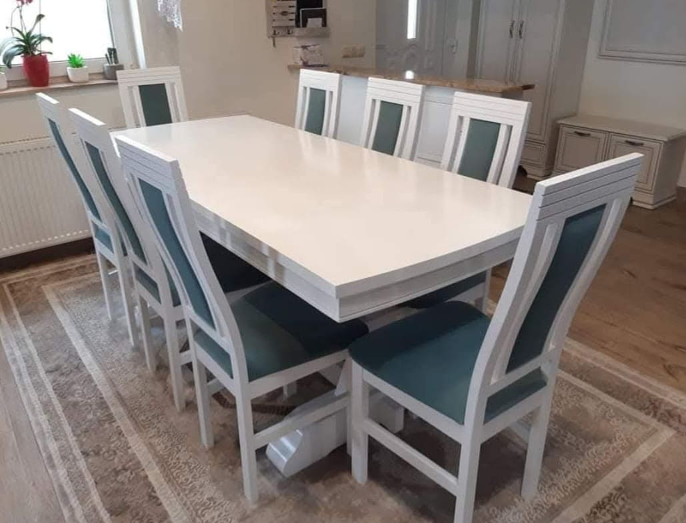
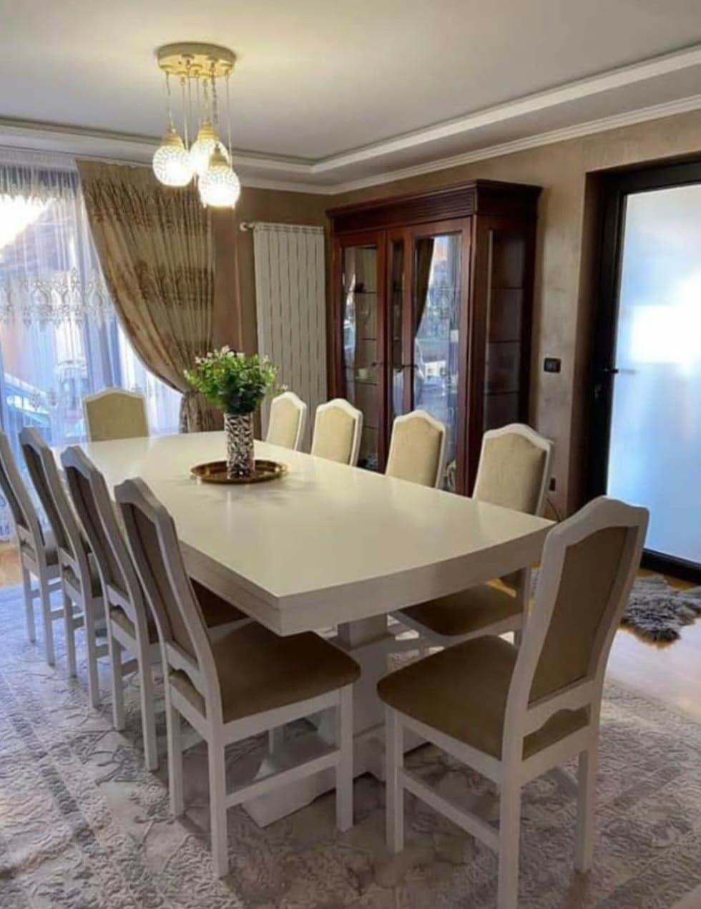
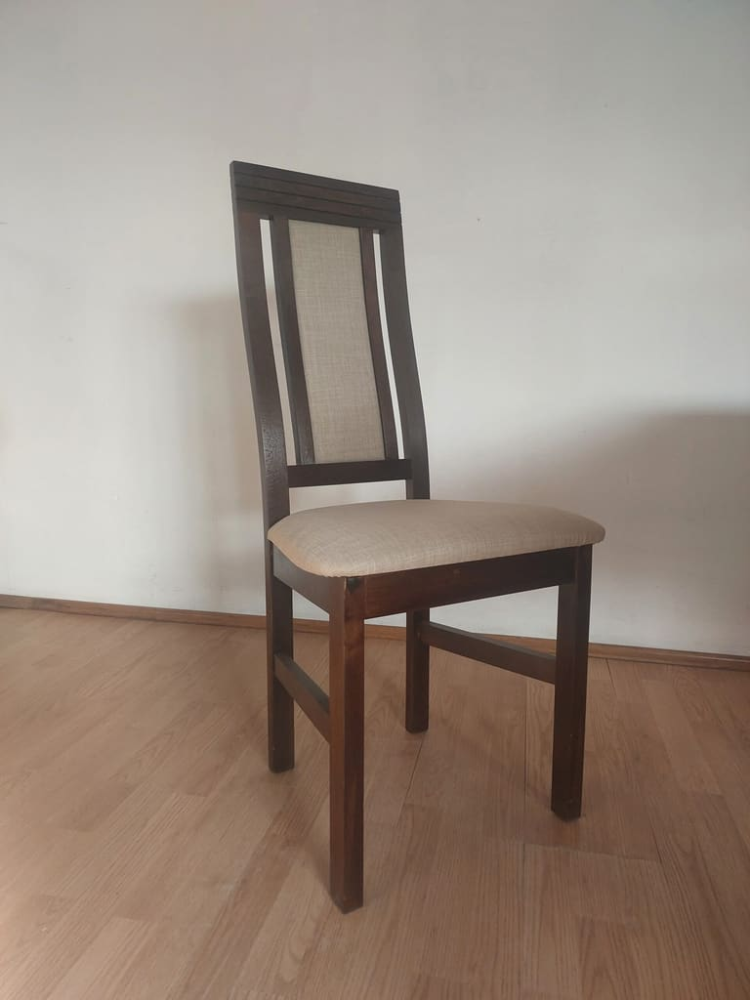
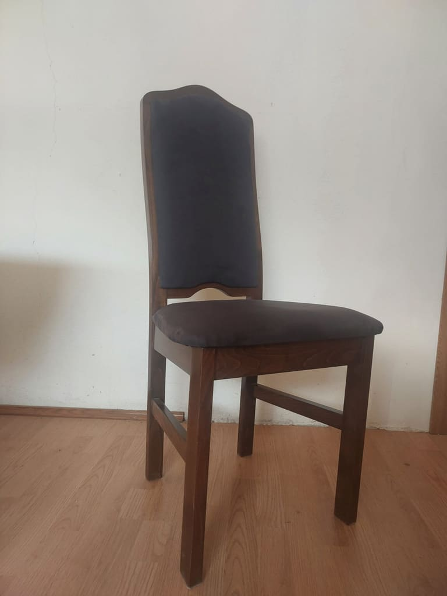

Masa Carina cu scaun Cami
Mesele au înălțimea de 78 cm, iar dimensiunile de lungime și lățime sunt cele de mai jos.
- 1,60 × 0,80 m
- 1,80 × 0,90 m
- 2,00 × 0,90 m
- 2,20 × 1,00 m
- 2,40 × 1,00 m
- 2,60 × 1,00 m
- 2,80 × 1,00 m
- 3,00 × 1,00 m
Lungime × lățime
Atelier de tâmplărie din anul 2000, în Sighetu Marmației.

Ca un mic atelier de tâmplărie, SC GLOBAL ADA SRL a evoluat constant datorită ambiției și dorinței de a ne dezvolta. Prin seriozitate, promptitudine, calitate și profesionalism, am reușit să ne dotăm cu toate tipurile de utilaje necesare procesului de fabricație a meselor și scaunelor.
În prezent, producem două modele de scaune din lemn de fag, care pot fi finisate conform cerințelor clienților în culorile alb, negru, wenge, stejar sau nuc. De asemenea, oferim mese cu blat neextensibil, disponibil în dimensiuni variind din 20 în 20 cm, începând de la 1,20 m și atingând până la 3 m.
Blatul meselor este fabricat din PAL de 34 mm, bordurat cu lemn masiv și acoperit cu furnir natural de stejar, aplicat în presă caldă.
La noi aveți posibilitatea de a personaliza produsul comandat, selectând culoarea lemnului, a tapițeriei și dimensiunea blatului de masă conform preferințelor dumneavoastră.
Seturile noastre de masă și scaune sunt alegerea perfectă pentru a aduce un strop de eleganță și confort în orice spațiu.
Cu un design modern și linii curate, acest set transformă mesele cu familia sau prietenii în momente memorabile.
Fie că este vorba de o cină în familie sau de o întâlnire cu prietenii, confortul scaunelor și stilul mesei vor crea o atmosferă plăcută și primitoare.
Mesele cu blat neextensibil, disponibile în dimensiuni între 1,20 m și 3 m, au blat din PAL de 34 mm, bordurat cu lemn masiv și acoperit cu furnir natural de stejar aplicat la presă caldă.
Mesele au înălțimea de 78 cm, iar dimensiunile de lungime și lățime sunt cele de mai jos.
Lungime × lățime

Mesele au înălțimea de 78 cm, iar dimensiunile de lungime și lățime sunt cele de mai jos.
Lungime × lățime
Mesele au înălțimea de 78 cm, iar dimensiunile de lungime și lățime sunt cele de mai jos.
Lungime × lățime
Scaunele Cami și Georgiana sunt realizate din lemn de fag și sunt finisate în culorile selectate de client. Pentru tapițare, utilizăm materiale țesute, cum ar fi stofa sau plușul.

Culori disponibile la comandă

Culori disponibile la comandă